เริ่มจากแม่แบบ (New Project)
ไม่ต้องเริ่มจากฟอร์มว่าง: Phai Studio มีแม่แบบ 13 แบบ แต่ละแบบเป็นโปรแกรมที่รันได้ทันที มีฟอร์ม โค้ด และข้อความภาษาไทยครบ ใช้ต่อยอดหรืออ่านเป็นตัวอย่างก็ได้
สร้างโปรเจกต์จากแม่แบบ
- กด File > New project... (หรือ New project ในหน้าเริ่มต้น)
- เลือกแม่แบบจากรายการด้านซ้าย แยกเป็นกลุ่ม: พื้นฐาน ทั่วไป งานธุรกิจ แบบที่คุ้นตา และ สำหรับโรงเรียน พิมพ์ในช่อง ค้นหาแม่แบบ เพื่อกรอง เช่น
ฐานข้อมูลหรือtimer - ด้านขวาเป็นภาพโปรแกรมที่จะได้ ชื่อ และสิ่งที่มันทำ กด ถัดไป... แล้วเลือกโฟลเดอร์ (ชื่อโฟลเดอร์เป็นชื่อโปรเจกต์)
- Phai Studio สร้างไฟล์ทั้งหมดและเปิดฟอร์มแรกให้ กด F5 รันได้เลย
.phf) โค้ด Rust ของแต่ละฟอร์ม text.rs ที่เก็บข้อความภาษาไทย และ theme.css แก้ได้ทุกไฟล์เหมือนโปรเจกต์ที่เขียนเอง ส่วนไฟล์ _ui.rs ของฟอร์ม Phai Studio เขียนให้ใหม่ทุกครั้งที่บันทึกฟอร์ม อย่าแก้ไฟล์นั้นเองแม่แบบทั้งหมด
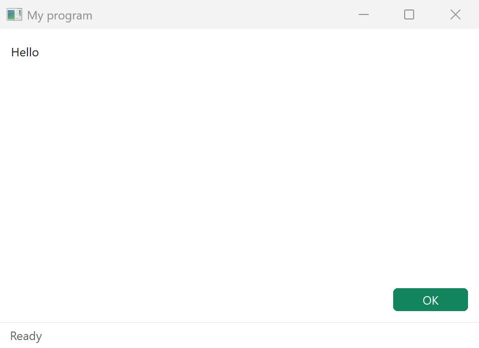
โปรแกรม Windows พื้นฐาน
หน้าต่างที่มีเมนู แถบเครื่องมือ และแถบสถานะ ฟอร์มเปิดเต็มจอ
จุดเริ่มต้นที่ว่างที่สุด ลาก control ลงฟอร์มแล้วต่อเติมเองได้ทุกอย่าง
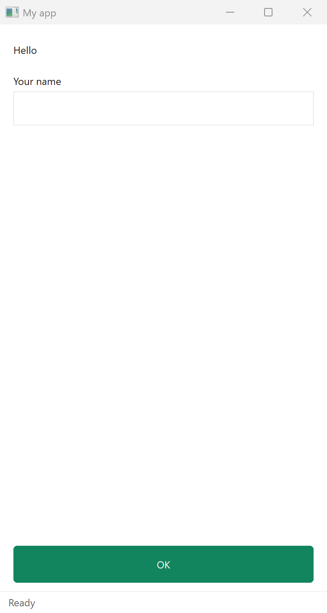
แอปมือถือ (PWA) พื้นฐาน
ฟอร์มขนาดมือถือ control เรียงลงมาทีละตัว
กด Build > รันบนมือถือ แล้วสแกน QR เปิดดูบนมือถือได้ทันที (ดู เว็บและมือถือ)
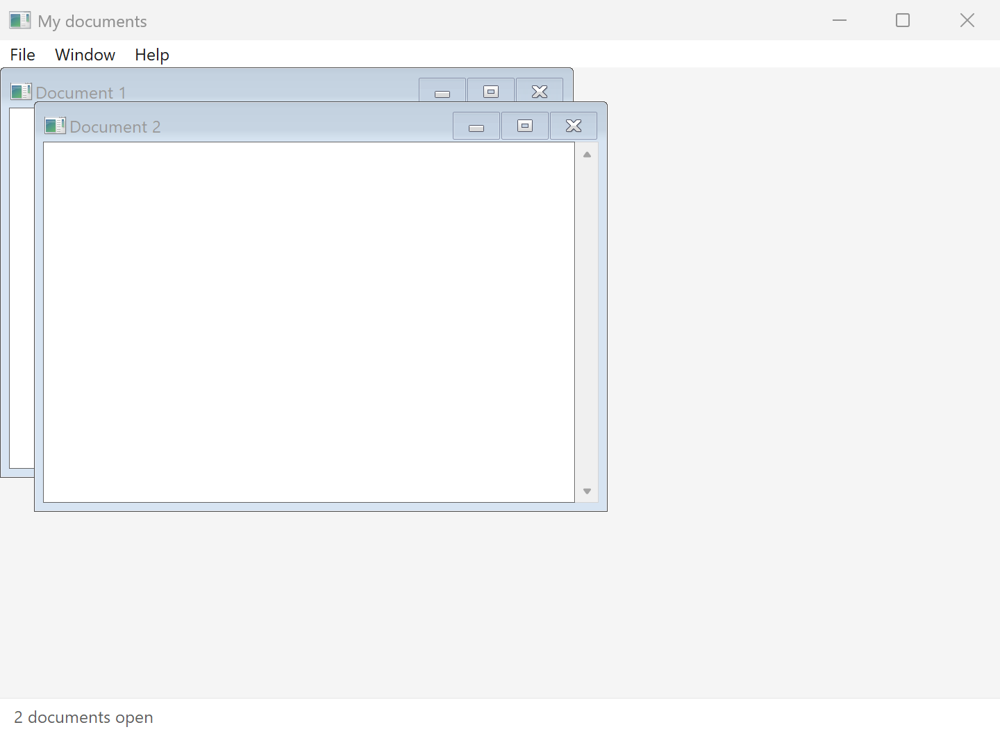
โปรแกรมหลายเอกสาร (MDI) ทั่วไป
หน้าต่างหลักที่เปิดเอกสารหลายฉบับไว้ข้างใน มีเมนูแฟ้ม หน้าต่าง และวิธีใช้
ฟอร์มลูก (child form) เปิดได้หลายฉบับ จัดเรียงแบบซ้อนหรือเรียงข้างกัน
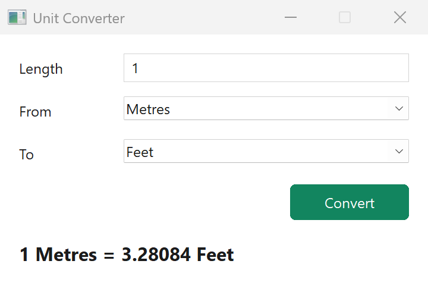
โปรแกรมหน้าต่างเล็ก ทั่วไป
หน้าต่างเดียวขนาดคงที่ แปลงหน่วยความยาว
เหมาะเป็นโปรแกรมแรก: อ่านค่าจากช่องกรอก คำนวณ แล้วแสดงผล
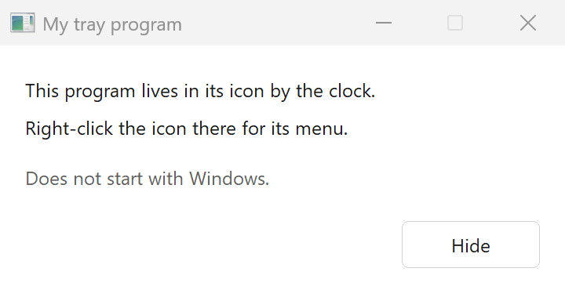
โปรแกรมในถาด ทั่วไป
เริ่มแบบซ่อนเป็นไอคอนข้างนาฬิกา เมนูคลิกขวาเปิดหน้าต่างเล็กหรือออกจากโปรแกรม
ใช้ Notify icon กับ Context menu สำหรับโปรแกรมที่ทำงานอยู่เบื้องหลัง
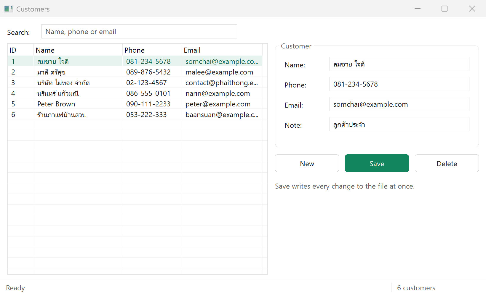
ข้อมูลลูกค้าในฐานข้อมูล งานธุรกิจ
เก็บรายชื่อลูกค้าในไฟล์ SQLite (customers.db) ข้างโปรแกรม ค้นหา แก้ไข เพิ่ม และลบได้
ตาราง ช่องกรอก และ Binding source ผูกกับฐานข้อมูลด้วย phai-data (ดู ทำงานกับฐานข้อมูล)
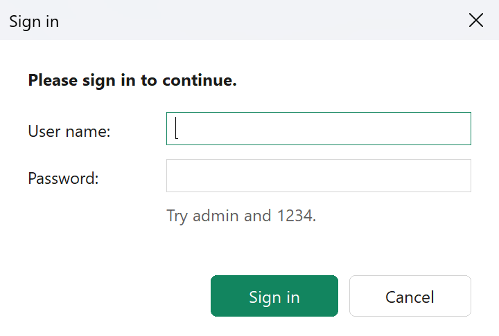
เข้าสู่ระบบก่อนใช้งาน งานธุรกิจ
หน้าเข้าสู่ระบบขึ้นก่อน ใส่รหัสถูกจึงเปิดหน้าต่างหลัก ออกจากระบบแล้วกลับมาหน้าเข้าสู่ระบบ
ลองด้วยผู้ใช้ admin รหัส 1234 ตอนทำจริงควรเก็บผู้ใช้ในฐานข้อมูล และเก็บรหัสแบบ hash ไม่เก็บเป็นข้อความตรง ๆ
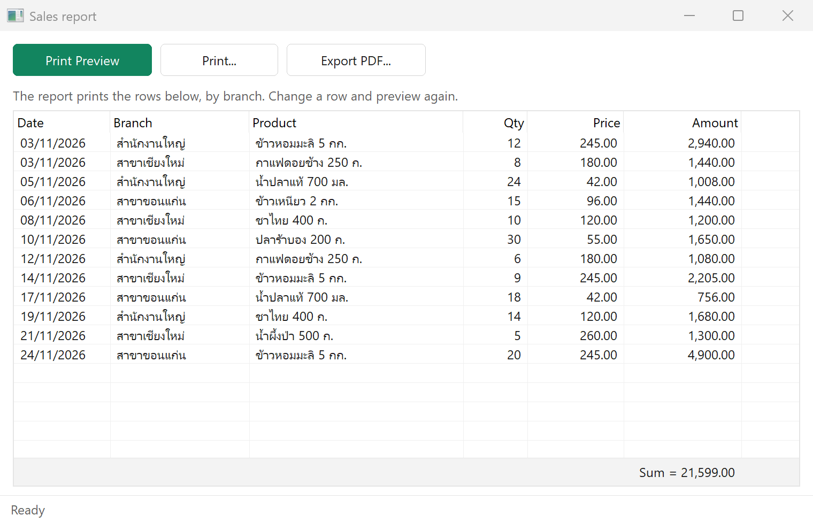
รายงานพร้อมดูก่อนพิมพ์ งานธุรกิจ
ยอดขายในตาราง พิมพ์เป็นรายงานแยกตามสาขาพร้อมยอดรวม
ดูก่อนพิมพ์ พิมพ์ หรือบันทึกเป็น PDF (ดู รายงานพิมพ์)
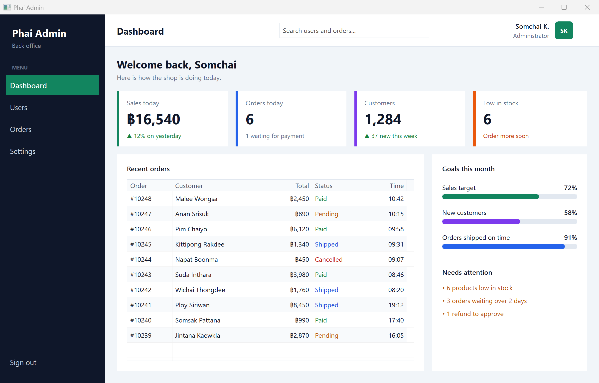
แดชบอร์ดผู้ดูแลระบบ งานธุรกิจ
หน้าต่างระบบหลังร้าน เมนูสีเข้มด้านซ้าย แถบหัวพร้อมช่องค้นหา การ์ดสรุปตัวเลข เป้าหมาย และหน้าผู้ใช้ คำสั่งซื้อ ตั้งค่า
แต่ละหน้าเป็นฟอร์มแยก สลับกันในหน้าต่างเดียว และตกแต่งทั้งหมดด้วย theme.css (ดู ตกแต่งหน้าตาด้วย CSS)
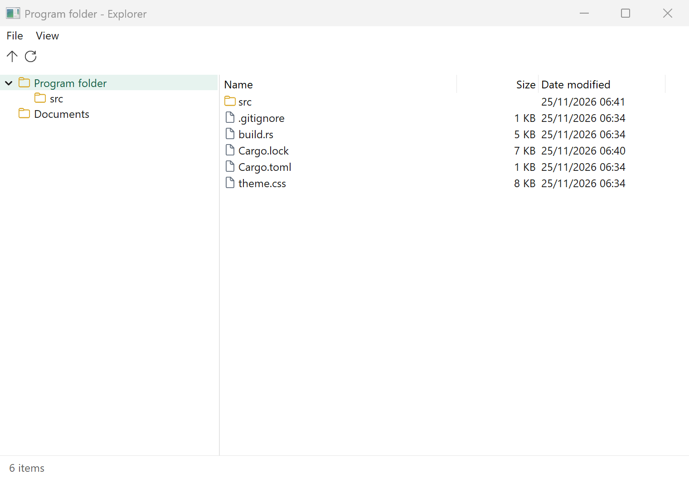
หน้าต่างแบบ Explorer แบบที่คุ้นตา
โฟลเดอร์เป็นต้นไม้ด้านซ้าย ไฟล์ในโฟลเดอร์ที่เลือกพร้อมขนาดและวันที่ด้านขวา
Tree view กับ List อ่านไฟล์จริงในเครื่องด้วย std::fs
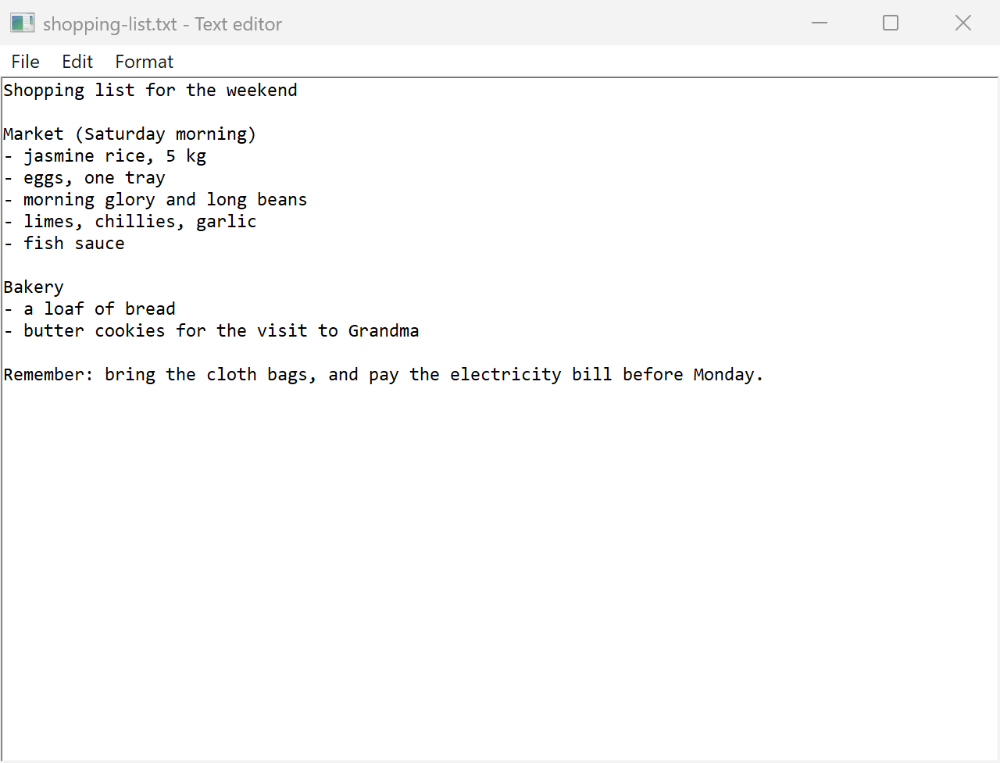
โปรแกรมแก้ข้อความ (แบบ Notepad) แบบที่คุ้นตา
เปิด บันทึก ค้นหา ตัดบรรทัด เลือกแบบอักษร
กล่องเปิด/บันทึกไฟล์ กล่องเลือกแบบอักษร และถามก่อนทิ้งงานที่ยังไม่บันทึก
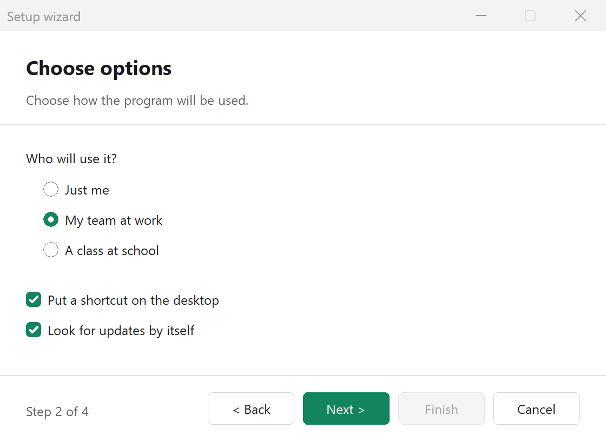
ตัวช่วยทีละขั้น แบบที่คุ้นตา
หน้าต้อนรับ ตัวเลือก รายละเอียด และสรุป พร้อมปุ่มย้อนกลับ ถัดไป เสร็จสิ้น และยกเลิก
สลับหน้าในฟอร์มเดียว และเปิด/ปิดปุ่มตามขั้นที่อยู่
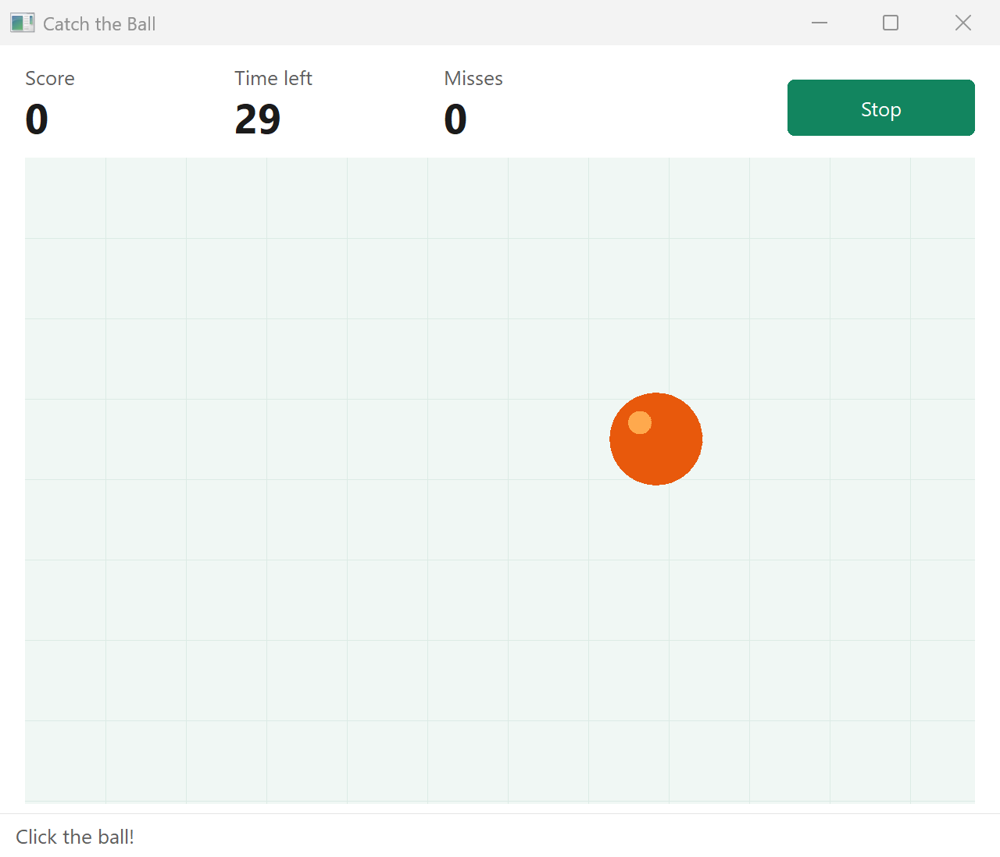
เกมจับลูกบอล (ใช้ Timer) สำหรับโรงเรียน
คลิกลูกบอลที่เด้งไปมาให้ได้มากที่สุดใน 30 วินาที
Timer สองตัว: ตัวหนึ่งขยับลูกบอล 50 ครั้งต่อวินาที อีกตัวนับถอยหลัง และวาดเองในเหตุการณ์ Paint เหมาะใช้สอนในห้องเรียน
เรียนจากแม่แบบ
- เปิดไฟล์
.rsของฟอร์ม จะเห็นแต่ละเหตุการณ์ (เช่นfn new_clicked) พร้อมคำอธิบายว่าทำอะไร - ดับเบิลคลิก control บนฟอร์มเพื่อไปที่โค้ดของมัน หรือดูแท็บ Events ใน Properties ว่าเหตุการณ์ไหนผูกกับฟังก์ชันอะไร
- ลองแก้
theme.cssแล้วดูฟอร์มเปลี่ยนตามทันที - ข้อความทุกคำอยู่ใน
text.rsโปรแกรมขึ้นภาษาไทยเมื่อเปิดด้วย--thaiไม่ใส่จะเป็นภาษาอังกฤษ